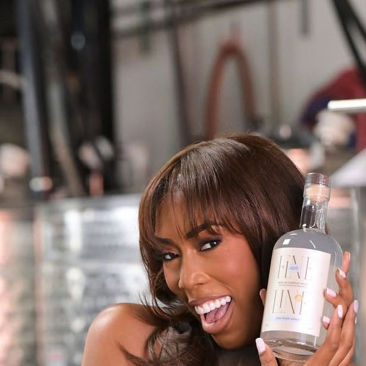
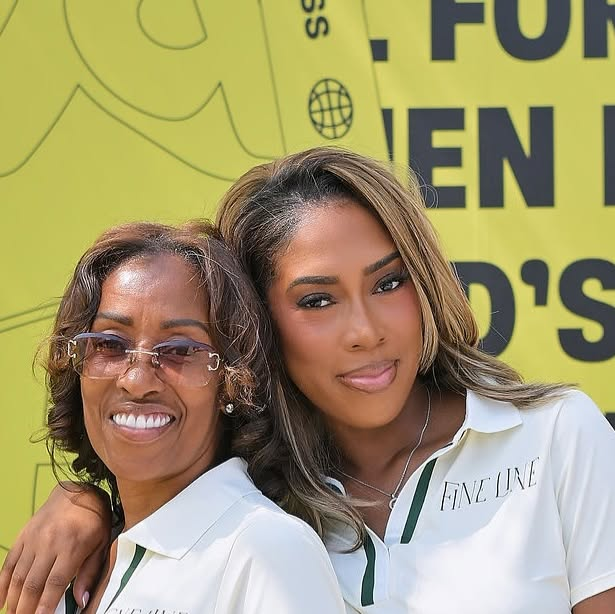

Nobody was making the drink I needed. So I made it myself.
Beverly Beal Jr. spent years as an intellectual property attorney, protecting other people’s brands. Then her own health forced a question she could not ignore. Diagnosed with Crohn’s disease and ulcerative colitis, alcohol came off the table. But the dinners did not stop. The celebrations did not stop. The moments that call for a raised glass kept coming, and every option on the shelf asked her to settle for less.
So she built the drink she needed. A zero-proof spirit with real flavor, real sophistication, and prebiotics working for her gut instead of against it. She invested her own money into developing the products, manufacturing the inventory, and building the brand from the ground up.
Fine Line is now pouring in Detroit, Atlanta, Los Angeles, and Washington DC. Beverly has taken the stage at Create & Cultivate, spoken at the ESSENCE Festival of Culture, been featured on Fox 2 Detroit and Good Day DC, and landed on Hour Detroit’s Best Dressed List for 2026.
She is also the co-owner of Detroit Brew-ti-ful Coffee House, the family coffee business she built with her mother, Beverly Beal Sr., and the founder of GiftBiz, a nonprofit that gives free resources to entrepreneurs. Ownership has always been the common thread. She builds things that last, and she builds them for her community.